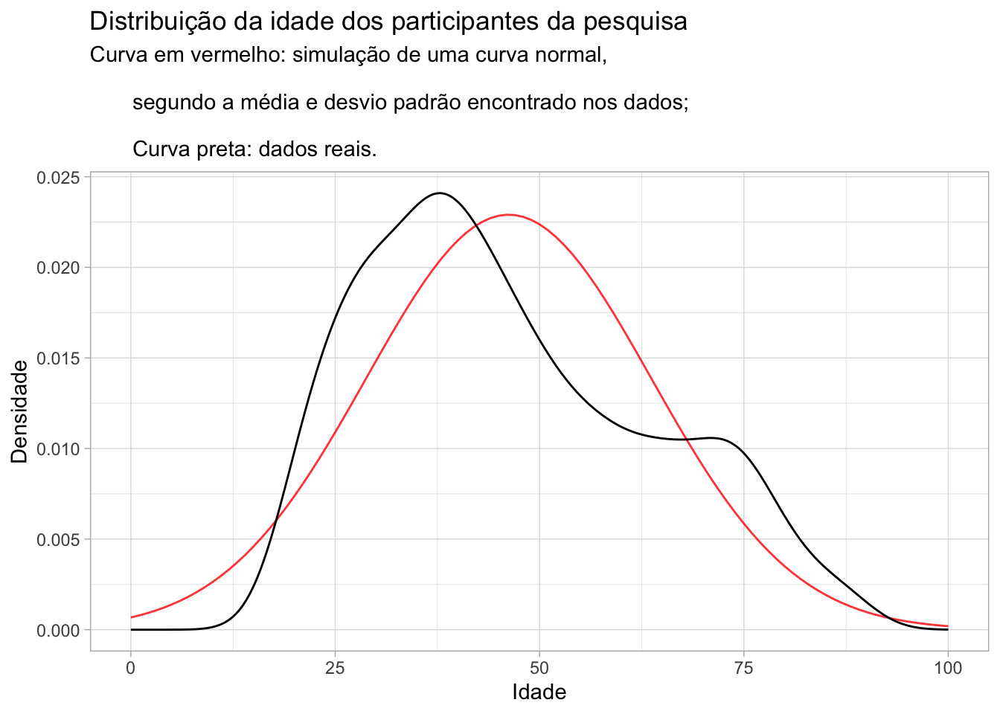
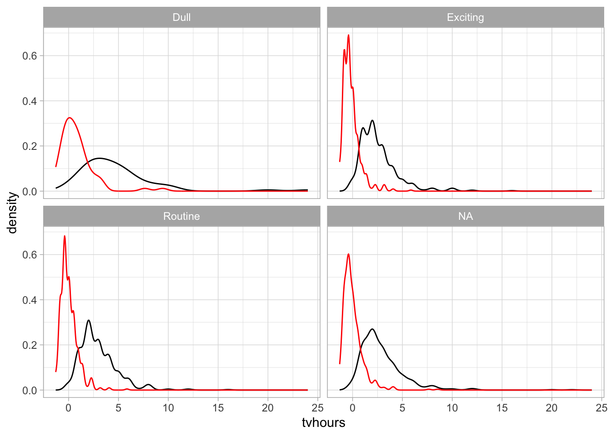

Lista teórica 6
Estatística aplicada à psicobiologia I
Código
dados <- readxl::read_excel("Roca da Serra do Sul.xls") |>
janitor::clean_names()Código
dplyr::glimpse(dados)Rows: 1,500
Columns: 9
$ x1 <chr> "1.000000", "2.000000", "3.000000", "4.000000", "5.000000", "…
$ childs <chr> "1", "0", "0", "0", "0", "2", "2", "2", "2", "0", "0", "0", "…
$ age <dbl> 43, 44, 43, 45, 78, 83, 55, 75, 31, 54, 29, 23, 61, 63, 33, 3…
$ educ <dbl> 11, 16, 16, 15, 17, 11, 12, 12, 18, 18, 18, 15, 12, 4, 10, 14…
$ sex <chr> "Male", "Male", "Female", "Female", "Female", "Male", "Female…
$ race <chr> "white", "black", "white", "white", "white", "white", "white"…
$ life <chr> "Routine", "Exciting", "Exciting", NA, "Exciting", "Routine",…
$ tvhours <dbl> 4, 5, 2, 4, 1, 4, 3, 3, 1, 1, 2, 4, 3, 6, 4, 2, 5, 2, 2, 4, 1…
$ attsprts <chr> "No", "No", "No", "No", "Yes", "No", "Yes", "Yes", "Yes", "Ye…Questão 1
1 - No banco de dados “Roça da Serra do Sul”, queremos saber se existe diferença na idade entre homens e mulheres. Verifique os pré-requisitos para o teste no banco de dados e responda: qual é o teste mais indicado?
Variável independente: Sexo. Variável categórica.
Variável dependente: Idade. Variável numérica discreta.
Quantidade de grupos na variável indepentende:
Temos apenas 2 grupos.
Testando os pressupostos
Normalidade
Visualizando os dados:
Código
media_idade <- mean(dados$age, na.rm = TRUE)
desvio_padrao_idade <- sd(dados$age, na.rm = TRUE)
intervalo_idades <- 0:100
# Simular uma curva caso esses valores fossem normais
densidade_idade <-
dnorm(intervalo_idades, mean = media_idade, sd = desvio_padrao_idade)
df_normal <- tibble::tibble(age = intervalo_idades,
density = densidade_idade)
dados |>
ggplot(aes(x = age)) +
geom_line(
data = df_normal,
aes(x = age, y = density),
color = "red",
alpha = 0.8
) +
geom_density() +
theme_light() +
labs(title = "Distribuição da idade dos participantes da pesquisa",
x = "Idade",
y = "Densidade",
subtitle = "Curva em vermelho: simulação de uma curva normal, \n
segundo a média e desvio padrão encontrado nos dados; \n
Curva preta: dados reais.")
Na visualização, não parece tão longe da normal.
Código
shapiro.test(dados$age) |>
broom::tidy() |>
knitr::kable()| statistic | p.value | method |
|---|---|---|
| 0.9550071 | 0 | Shapiro-Wilk normality test |
A hipótese nula deste teste é que os dados tem distribuição normal. Nesse caso, queremos que o valor-p seja maior que 5%. Com o resultado encontrado (p-valor próximo à 0) podemos assumir que os dados não seguem a distribuição normal.
Homogeneidade de variâncias
Para isso, podemos fazer o teste de Levene.
- Hipótese nula: as variâncias são iguais.
- Hipótese alternativa: as variâncias são diferentes.
Código
car::leveneTest(dados$age ~ dados$sex)Levene's Test for Homogeneity of Variance (center = median)
Df F value Pr(>F)
group 1 4.0309 0.04485 *
1493
---
Signif. codes: 0 '***' 0.001 '**' 0.01 '*' 0.05 '.' 0.1 ' ' 1Interpretando o resultado do teste de Levene:
Neste caso, desejamos que o p-valor seja maior que 0.05, pois é desejável que as variâncias sejam iguais. Como o p-valor é igual à 0.05, rejeitamos a hipótese nula e assumimos que as variâncias são diferentes entre os grupos.
Caso fosse usar o teste-t independente, ou ANOVA, teria que fazer a correção de Welch.
Nossos dados não são pareados, e temos 2 grupos para a variável independente.
Então, se formos usar um teste não paramétrico, o mais indicado seria o Mann-Whitney. Se formos usar um teste paramétrico, o mais indicado seria o teste t-independente.
- Dúvida: O N é suficiente? não é falado no texto.
Respondi: Teste t independente
Questão 2
2 - No banco de dados “Roça da Serra do Sul”, queremos saber se existe diferença na idade entre homens e mulheres. Qual é a pergunta de pesquisa nesse caso?
Respondi: Existe efeito do Sexo sobre a idade?
Questão 3
3 - Faça o teste estatístico escolhido corretamente na questão 1 e responda a questão de pesquisa escolhida na questão 2.
Teste t-independente (paramétrico):
| statistic | t_df | p_value | alternative | estimate | lower_ci | upper_ci |
|---|---|---|---|---|---|---|
| 1.708128 | 1408.219 | 0.0878331 | two.sided | 1.543969 | -0.229158 | 3.317096 |
- Interpretação: Não temos evidências para afirmar que existe efeito do Sexo sobre a Idade.
Respondi: Não Existe efeito do Sexo sobre a Idade (t(1493)=-1,697,p=0,090)
Testando com Mann-Whitney (não paramétrico):
Eu estava confusa, pois em todos os lugares que encontrei, falavam para usar a função wilcox.test para fazer o teste de Mann-Whitney. Porém, confunde com o nome do teste de Wilcoxon.
Encontrei esse vídeo da Fernanda Peres, onde ela fala sobre isso: https://www.youtube.com/watch?v=ekvKa0HzeGo
Ainda estou insegura com isso… pesquisar mais.
Código
wilcox.test(age ~ sex, data = dados, exact = FALSE)
Wilcoxon rank sum test with continuity correction
data: age by sex
W = 286388, p-value = 0.1215
alternative hypothesis: true location shift is not equal to 0Interpretação: Não existe efeito do sexo sobre a idade.
Questão 4
4 - Em um artigo, um pesquisador escreveu na seção de métodos que seu estudo iria utilizar 150 participantes. Porém, o revisor lendo a seção de resultados, observou que nos dados da ANOVA a notação estava F(3,31)=1,43 p=0,001. Com base nos valores de graus de liberdade diga qual o Tamanho da Amostra válida e o Número de grupos que o pesquisador tinha em seu estudo, respectivamente:
O que temos:
3 graus de liberdade dos grupos.
31 graus de liberdade da amostra.
RESPOSTA DA YNGRID VICTÓRIA CASSIANO MASCARENHAS:
Para determinar o tamanho da amostra válida e o número de grupos, podemos usar os graus de liberdade fornecidos na notação da ANOVA.
Na notação
F(3,31), o primeiro número dentro dos parênteses representa os graus de liberdade entre os grupos (numerador) e o segundo número representa os graus de liberdade dentro dos grupos (denominador).
Então, o número de grupos é dado pelos graus de liberdade entre os grupos mais 1, e o tamanho da amostra válida é a soma dos graus de liberdade entre e dentro dos grupos mais 1. Nesse caso, temos:
- Graus de liberdade entre os grupos: 3 (n +1 = x)
- Graus de liberdade dentro dos grupos: 31 Portanto, o número de grupos é 3 + 1 = 4 e o tamanho da amostra válida é 3 + 31 + 1 = 35.
Respondi: N=35 com 4 grupos.
Questão 5
5 - Observe a tabela da ANOVA abaixo e calcule os valores de X e Y:
Código
soma_dos_quadrados_entre_grupos <- 263.7
media_dos_quadrados_entre_grupos <- 130.3
soma_dos_quadrados_dentro_dos_grupos <- 4531.8
soma_dos_quadrados_total <- 4792.5
# media_dos_quadrados_dentro_dos_grupos <- YRespondi: X=28,39 e Y=4,590
Questão 6 - FOI ANULADA
Questão 7
7 - Com base no banco de dados “Roça da Serra do Sul”, queremos saber se o que as pessoas acham da vida delas (variável life) tem efeito sobre o número de horas que elas assistem tv (tvhours). Teste a variável dependente quanto aos pré-requisitos. Caso os pré-requisitos da VD não sejam atendidos, padronize a variável com base no método Z-escore e responda as perguntas. Qual o teste estatístico mais adequado para responder a pergunta de pesquisa proposta nesta questão?
Variável independente: life
Variável dependente: tvhours
Quantas categorias temos na VI?
Opções de respostas:
Teste T - Teste paramétrico para 2 grupos. não uso pois temos mais de 2 grupos.
Qui-Quadrado - Não uso pois temos 1 variável categórica, e 1 contínua. Para usar qui-quadrado, as duas deveriam ser categóricas.
Mann-Whitney - Teste não paramétrico para 2 grupos. Não uso, temos mais que 2 grupos.
Agora a questão fica entre: uso um teste paramétrico ou não paramétrico?
Testando a normalidade
Código
media_tempo_tv <- mean(dados$tvhours, na.rm = TRUE)
desvio_padrao_tempo_tv<- sd(dados$tvhours, na.rm = TRUE)
intervalo_tempo_tv <- 0:24
# Simular uma curva caso esses valores fossem normais
densidade_tempo_tv <-
dnorm(intervalo_tempo_tv, mean = media_tempo_tv, sd = desvio_padrao_tempo_tv)
df_tempo_tv_normal <-
tibble::tibble(tvhours = intervalo_tempo_tv, density = densidade_tempo_tv)
dados |>
ggplot(aes(x = tvhours)) +
geom_line(
data = df_tempo_tv_normal,
aes(x = tvhours, y = density),
color = "red",
alpha = 0.8
) +
geom_density() +
theme_light() +
labs(title = "Distribuição da idade dos participantes da pesquisa",
x = "Idade",
y = "Densidade",
subtitle = "Curva em vermelho: simulação de uma curva normal, \n
segundo a média e desvio padrão encontrado nos dados; \n
Curva preta: dados reais.")Pelo gráfico já fica claro que os dados não seguem uma distribuição normal. Vamos fazer o teste de Shapiro-Wilk para confirmar.
Código
shapiro.test(dados$tvhours) |>
broom::tidy() |>
knitr::kable()| statistic | p.value | method |
|---|---|---|
| 0.7795686 | 0 | Shapiro-Wilk normality test |
A hipótese nula deste teste é que os dados tem distribuição normal. Nesse caso, queremos que o valor-p seja maior que 5%. Com o resultado encontrado (p-valor próximo à 0) podemos assumir que os dados não seguem a distribuição normal.
Homogeneidade de variâncias
Para isso, podemos fazer o teste de Levene.
- Hipótese nula: as variâncias são iguais.
- Hipótese alternativa: as variâncias são diferentes.
Código
car::leveneTest(dados$tvhours ~ dados$life)Levene's Test for Homogeneity of Variance (center = median)
Df F value Pr(>F)
group 2 15.139 0.0000003343 ***
987
---
Signif. codes: 0 '***' 0.001 '**' 0.01 '*' 0.05 '.' 0.1 ' ' 1Interpretando o resultado do teste de Levene:
Neste caso, desejamos que o p-valor seja maior que 0.05, pois é desejável que as variâncias sejam iguais. Como o p-valor é menor que 0.05, rejeitamos a hipótese nula e assumimos que as variâncias são diferentes entre os grupos.
Caso fosse usar o teste-t independente, ou ANOVA, teria que fazer a correção de Welch.
Calculando z-score de tvhours
O exercício indica que, caso os pré-requisitos da VD não sejam atendidos, devemos padronizar a variável com base no método Z-escore.
Visualizando a distribuição
Código
dados_zscore_tv |>
ggplot() +
geom_density(aes(x = tvhours)) +
geom_density(aes(x = z_score_tv_hours), color = "red") +
theme_light() +
facet_wrap(~life)
Testando novamente
Código
dados_zscore_tv |>
ggplot(aes(x = z_score_tv_hours)) +
geom_density() +
theme_light()Mesmo padronizando com o z-score, não tem uma distribuição próxima à normal.
Código
car::leveneTest(dados_zscore_tv$z_score_tv_hours ~ dados$life)Levene's Test for Homogeneity of Variance (center = median)
Df F value Pr(>F)
group 2 15.139 0.0000003343 ***
987
---
Signif. codes: 0 '***' 0.001 '**' 0.01 '*' 0.05 '.' 0.1 ' ' 1Ainda não tem homogeneidade de variâncias.
Nesse caso, acredito que usaria o teste Kruskall Wallis.
Questão 8
8 - É necessário o uso de posthoc nesse caso?
Testes post-hoc são testes estatísticos que são realizados após o teste de ANOVA para identificar as diferenças significativas entre as médias de diferentes grupos.
Usamos posthoc quando: a) o teste utilizado é a ANOVA; e b) o resultado é significativo.
Resuminho que encontrei: https://www.blog.psicometriaonline.com.br/o-que-e-um-teste-post-hoc/
Respondi: Sim
Questão 9
9 - Aplique o teste estatístico mais adequado e aplique teste posthoc caso necessário. Faça um parágrafo descrevendo os resultados, inclusive com as notações dos testes utilizados.
Com base no banco de dados “Roça da Serra do Sul”, que apresenta respostas de 1500 residentes maiores de idade, realizamos um teste estatístico para avaliar se existe efeito da percepção que essas pessoas tem de suas vidas (variável life) sobre o número de horas que essas pessoas assistem tv (variável tvhours).
Consideramos que a variável indepentende é “life”, que representa o que as pessoas acham de suas vidas, sendo possível responder entre 3 categorias: Dull (n = 65), Exciting (n = 473) e Routine (n = 459). Existem também 503 pessoas que não responderam a pergunta.
Consideramos que a variável dependente é “tvhours”, que representa quantas horas as pessoas assistem tv por dia. Essa variável é numérica e discreta, com respostas entre 0 e 24 horas. Cerca de 80% dos respondentes passam entre 1 e 4 horas por dia assistindo TV. A variável dependente não apresenta distribuição normal, e também não apresenta homogeneidade das variâncias. Calculamos o z-score da variável tvhours para utilizar no cálculo do teste.
O teste estatístico escolhido foi o Kruskall-Wallis, um teste não-paramétrico utilizado quando queremos avaliar o efeito de uma variável categórica com 2 ou mais categorias (neste caso, “life”) em uma variável numérica (neste caso, “tvhours”).
O resultado da estatística teste foi de H = 42,254. O valor-p teve resultado menor que 0.05, portanto, consideramos que existe efeito da percepção que essas pessoas tem de suas vidas (variável life) sobre o número de horas que essas pessoas assistem tv (variável tvhours).
O teste post-hoc utilizado para identificar as diferenças significativas entre os diferentes grupos foi o teste de Dunn (1964), e o valor-p foi ajustado pelo método Holm. Todos os grupos são diferentes (p<0.05), segundo os resultados encontrados.
As análises foram realizadas utilizando a linguagem de programação R (R Core Team, 2024), e os pacotes: stats (R Core Team, 2024) e FSA (Ogle et al., 2023).
Resultados:
Kruskal-Wallis rank sum test
data: z_score_tv_hours by life
Kruskal-Wallis chi-squared = 42.265, df = 2, p-value = 0.0000000006643
Teste post-hoc:
Dunn (1964) Kruskal-Wallis multiple comparison p-values adjusted with the Holm method.
|Comparison | Z| P.unadj| P.adj|
|:------------------|---------:|---------:|---------:|
|Dull - Exciting | 5.898210| 0.0000000| 0.0000000|
|Dull - Routine | 3.875732| 0.0001063| 0.0001063|
|Exciting - Routine | -4.085159| 0.0000440| 0.0000881|Referências:
Dunn, O.J. 1964. Multiple comparisons using rank sums. Technometrics 6:241-252.
Ogle DH, Doll JC, Wheeler AP, Dinno A (2023). FSA: Simple Fisheries Stock Assessment Methods. R package version 0.9.5, https://CRAN.R-project.org/package=FSA.
R Core Team (2024). R: A Language and Environment for Statistical Computing. R Foundation for Statistical Computing, Vienna, Austria. https://www.R-project.org/.
Calculando com o R base:
Código
teste <- kruskal.test(z_score_tv_hours ~ life, data = dados_zscore_tv)
# Summary of the analysis
summary(teste) Length Class Mode
statistic 1 -none- numeric
parameter 1 -none- numeric
p.value 1 -none- numeric
method 1 -none- character
data.name 1 -none- characterCódigo
teste
Kruskal-Wallis rank sum test
data: z_score_tv_hours by life
Kruskal-Wallis chi-squared = 42.265, df = 2, p-value = 0.0000000006643Código
post_hoc <- FSA::dunnTest(z_score_tv_hours ~ life, data = dados_zscore_tv)
post_hoc Comparison Z P.unadj P.adj
1 Dull - Exciting 5.898210 0.000000003674658 0.00000001102397
2 Dull - Routine 3.875732 0.000106304676964 0.00010630467696
3 Exciting - Routine -4.085159 0.000044046665502 0.00008809333100Código
post_hoc$res |>
knitr::kable(format = "markdown")| Comparison | Z | P.unadj | P.adj |
|---|---|---|---|
| Dull - Exciting | 5.898210 | 0.0000000 | 0.0000000 |
| Dull - Routine | 3.875732 | 0.0001063 | 0.0001063 |
| Exciting - Routine | -4.085159 | 0.0000440 | 0.0000881 |